July 31st, 2021¶
Motivation: A combo of useful stuf, not cleaned up, but still useful to go back for a piece of code
# HIDE CODE
import os
import sys
import nibabel as nib
import networkx as nx
from time import time
from pprint import pprint
from copy import deepcopy as dc
from os.path import join as pjoin
from myterial import orange, blue_grey
from IPython.display import display, IFrame, HTML
from matplotlib.colors import rgb2hex, to_rgb
import matplotlib.pyplot as plt
import seaborn as sns
# set style & no interpolalation
import matplotlib
matplotlib.rcParams['image.interpolation'] = 'none'
sns.set_style('whitegrid')
# tmp & extras dir
git_dir = pjoin(os.environ['HOME'], 'Dropbox/git')
tmp_dir = pjoin(git_dir, 'jb-Ca-fMRI/tmp')
extras_dir = pjoin(git_dir, 'jb-Ca-fMRI/_extras')
svinet_ws = pjoin(os.environ['HOME'], 'Documents/workspaces/svinet')
# GitHub
sys.path.insert(0, pjoin(git_dir, '_Ca-fMRI'))
from register.atlas import load_allen, make_tree_graph
from register.parcellation import Parcellation
from analysis.hierarchical import Hierarchical
from analysis.svinet import *
from utils.plotting import *
from utils.render import *
from model.mouse import Mice
from model.configuration import Config
# warnings
import warnings
warnings.filterwarnings('ignore', category=DeprecationWarning)
import matplotlib.tri as tri
corners = np.array([[0, 0], [1, 0], [0.5, 0.75**0.5]])
AREA = 0.5 * 1 * 0.75**0.5
triangle = tri.Triangulation(corners[:, 0], corners[:, 1])
refiner = tri.UniformTriRefiner(triangle)
trimesh = refiner.refine_triangulation(subdiv=4)
plt.figure(figsize=(8, 4))
for (i, mesh) in enumerate((triangle, trimesh)):
plt.subplot(1, 2, i+ 1)
plt.triplot(mesh)
plt.axis('off')
plt.axis('equal')
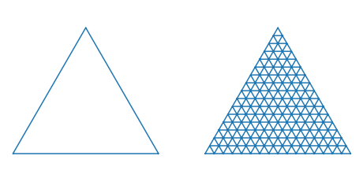
# For each corner of the triangle, the pair of other corners
pairs = [corners[np.roll(range(3), -i)[1:]] for i in range(3)]
# The area of the triangle formed by point xy and another pair or points
tri_area = lambda xy, pair: 0.5 * np.linalg.norm(np.cross(*(pair - xy)))
def xy2bc(xy, tol=1.e-4):
'''Converts 2D Cartesian coordinates to barycentric.'''
coords = np.array([tri_area(xy, p) for p in pairs]) / AREA
return np.clip(coords, tol, 1.0 - tol)
class Dirichlet(object):
def __init__(self, alpha):
from math import gamma
from operator import mul
self._alpha = np.array(alpha)
self._coef = gamma(np.sum(self._alpha)) / \
np.multiply.reduce([gamma(a) for a in self._alpha])
def pdf(self, x):
'''Returns pdf value for `x`.'''
from operator import mul
return self._coef * np.multiply.reduce([xx ** (aa - 1)
for (xx, aa)in zip(x, self._alpha)])
def draw_pdf_contours(dist, nlevels=200, subdiv=8, **kwargs):
import math
refiner = tri.UniformTriRefiner(triangle)
trimesh = refiner.refine_triangulation(subdiv=subdiv)
pvals = [dist.pdf(xy2bc(xy)) for xy in zip(trimesh.x, trimesh.y)]
plt.tricontourf(trimesh, pvals, nlevels, cmap='jet', **kwargs)
plt.axis('equal')
plt.xlim(0, 1)
plt.ylim(0, 0.75**0.5)
plt.axis('off')
draw_pdf_contours(Dirichlet([1, 1, 1]))
draw_pdf_contours(Dirichlet([0.9999, 0.9999, 0.9999]))
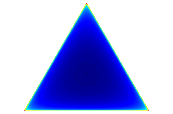
draw_pdf_contours(Dirichlet([5, 5, 5]))
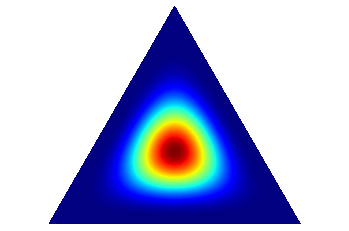
draw_pdf_contours(Dirichlet([1, 2, 2]))
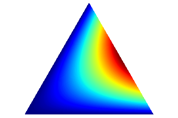
Mice¶
mice = Mice(Config(128))
mice.combine_dfs('both', full=True)
key = 'sub-SLC07' # 'sub-SLC02_ses-2' # 'sub-SLC'
mode = 'bold'
metric = 'spearman'
match_metric = 'cosine'
tasks = {}
for key in mice.bold_combined:
if 'run' not in key:
continue
tasks[key] = mice.bold[key].task
key = 'sub-SLC07_ses-3_run-7'
tasks[key]
'rest'
hier = Hierarchical(
mice=mice,
key=key,
mode='bold',
metric='correlation',
).fit(range(4, 7)).make_clusters()
num_k = 5
masks = hier.results[num_k]['cluster_masks'].copy()
masks = {k: m * mice.allen['isocortex_mask'] for k, m in masks.items()}
fig, axes = create_figure(1, num_k, (13.5, 3.5))
for idx in range(1, num_k + 1):
x = project_vol_2d(masks[idx], mice.allen['dims_flat'], mode='max_proj')
axes[idx-1].imshow(x, cmap=get_cluster_cmap(idx))
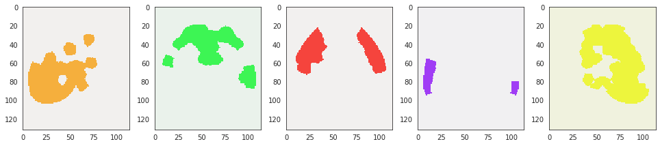
_ = cluster2html(
cluster=hier.clusters[num_k],
n_cortex_regions=128,
save_dir=extras_dir,
save_name='HIER_test',
)
Scene saved at /home/hadi/Dropbox/git/jb-Ca-fMRI/_extras/HIER_test_render-128_n-5.html
# stim = pd.read_csv('~/Documents/Stim.csv', index_col=0)
# stim
n_levels = 3
root = 'root'
tree = make_tree_graph(root, n_levels=n_levels, use_acroym=False)
_ = plot_nx_tree(tree, 'neato', node_size=6000)

n_levels = 4
root = 'Cerebrum'
tree = make_tree_graph(root, n_levels=n_levels, use_acroym=False)
_ = plot_nx_tree(tree, 'neato', node_size=6000)
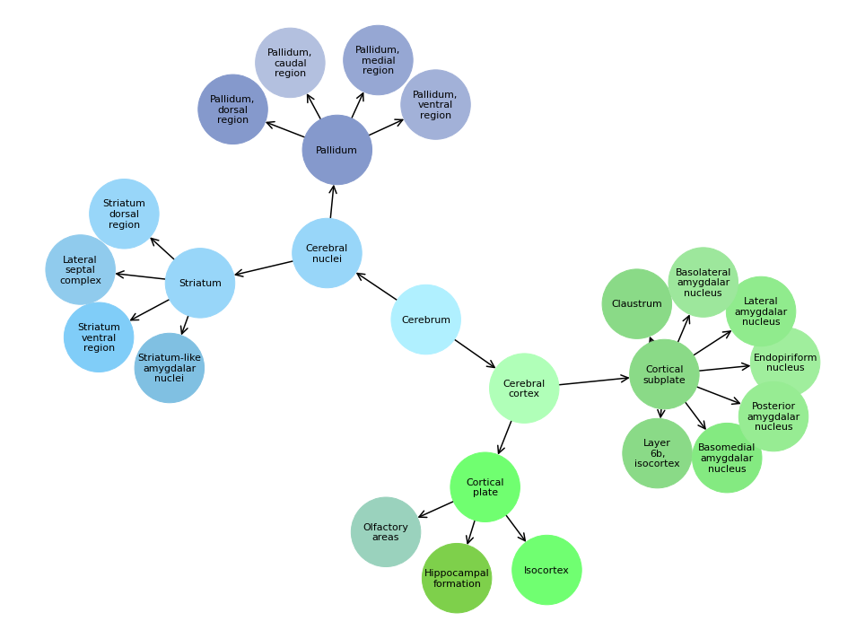
progs = [
'neato',
'dot',
'twopi',
'circo',
'fdp',
'nop',
'wc',
'acyclic',
'gvpr',
'gvcolor',
'ccomps',
'sccmap',
'tred',
'sfdp',
'unflatten',
]
n_levels = 3
root = 'BS' # 'Brain stem'
tree = make_tree_graph(root, n_levels=n_levels, use_acroym=True)
_ = plot_nx_tree(tree, 'neato', node_size=6000)
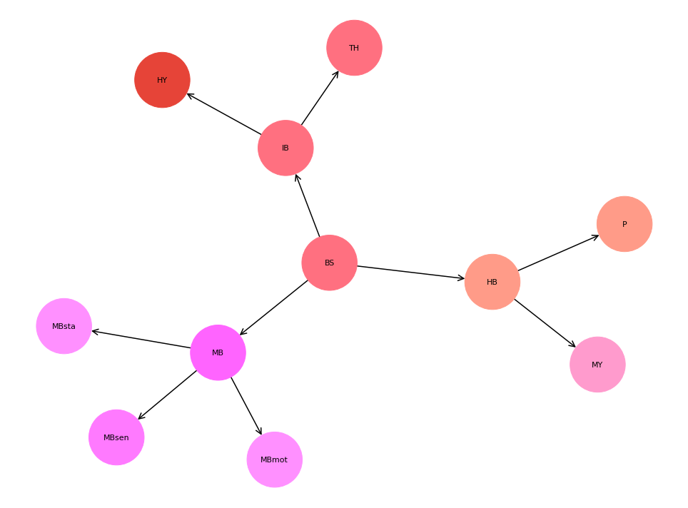
from register.atlas import get_summary_table
table = get_summary_table()
print(table)
allen mouse atlas (res. 100um)
From: http://www.brain-map.org (Wang et al 2020, https://doi.org/10.1016/j.cell.2020.04.007 )
+-----+------+--------------------------------------+-----------+----------+---------------+ | lvl | id | name | acronym | # voxels | relative size | +-----+------+--------------------------------------+-----------+----------+---------------+ | --- | --- | --- | --- | --- | --- | | 5 | 315 | Isocortex | Isocortex | 123245 | 100 % | | --- | --- | --- | --- | --- | --- | | 6 | 31 | Anterior cingulate area | ACA | 5501 | 4 % | | 6 | 95 | Agranular insular area | AI | 7892 | 6 % | | 6 | 247 | Auditory areas | AUD | 5770 | 5 % | | 6 | 895 | Ectorhinal area | ECT | 1728 | 1 % | | 6 | 184 | Frontal pole, cerebral cortex | FRP | 966 | 1 % | | 6 | 1057 | Gustatory areas | GU | 1760 | 1 % | | 6 | 44 | Infralimbic area | ILA | 849 | 1 % | | 6 | 500 | Somatomotor areas | MO | 24472 | 20 % | | 6 | 714 | Orbital area | ORB | 5886 | 5 % | | 6 | 922 | Perirhinal area | PERI | 797 | 1 % | | 6 | 972 | Prelimbic area | PL | 2433 | 2 % | | 6 | 22 | Posterior parietal association areas | PTLp | 2454 | 2 % | | 6 | 254 | Retrosplenial area | RSP | 10455 | 8 % | | 6 | 453 | Somatosensory areas | SS | 33317 | 27 % | | 6 | 541 | Temporal association areas | TEa | 3106 | 3 % | | 6 | 669 | Visual areas | VIS | 13489 | 11 % | | 6 | 677 | Visceral area | VISC | 2370 | 2 % | | --- | --- | --- | --- | --- | --- | | 7 | 985 | Primary motor area | MOp | 11376 | 9 % | | 7 | 993 | Secondary motor area | MOs | 13096 | 11 % | | --- | --- | --- | --- | --- | --- | | 7 | 322 | Primary somatosensory area | SSp | 24324 | 20 % | | 7 | 378 | Supplemental somatosensory area | SSs | 8993 | 7 % | | --- | --- | --- | --- | --- | --- | | 8 | 329 | SSp, barrel field | SSp-bfd | 6281 | 5 % | | 8 | 337 | SSp, lower limb | SSp-ll | 2361 | 2 % | | 8 | 345 | SSp, mouth | SSp-m | 6224 | 5 % | | 8 | 353 | SSp, nose | SSp-n | 3032 | 2 % | | 8 | 361 | SSp, trunk | SSp-tr | 1399 | 1 % | | 8 | 369 | SSp, upper limb | SSp-ul | 3764 | 3 % | | 8 | | SSp, unassigned | SSp-un | 1263 | 1 % | | --- | --- | --- | --- | --- | --- | +-----+------+--------------------------------------+-----------+----------+---------------+
allen = load_allen()
grey = allen['structure_tree'].get_structures_by_acronym(['grey'])[0]
grey_child_ids = allen['structure_tree'].child_ids([grey['id']])[0]
grey_childs = allen['structure_tree'].get_structures_by_id(grey_child_ids)
grey_childs
[ { 'acronym': 'CH', 'graph_id': 1, 'graph_order': 2, 'id': 567, 'name': 'Cerebrum', 'structure_id_path': [997, 8, 567], 'structure_set_ids': [ 112905828, 691663206, 12, 184527634, 112905813, 114512891, 114512892 ], 'rgb_triplet': [176, 240, 255] }, { 'acronym': 'BS', 'graph_id': 1, 'graph_order': 639, 'id': 343, 'name': 'Brain stem', 'structure_id_path': [997, 8, 343], 'structure_set_ids': [ 112905828, 691663206, 12, 184527634, 112905813, 114512891, 114512892 ], 'rgb_triplet': [255, 112, 128] }, { 'acronym': 'CB', 'graph_id': 1, 'graph_order': 1014, 'id': 512, 'name': 'Cerebellum', 'structure_id_path': [997, 8, 512], 'structure_set_ids': [ 2, 112905828, 691663206, 12, 184527634, 112905813, 687527670, 114512891, 114512892 ], 'rgb_triplet': [240, 240, 128] } ]
table = get_summary_table(structs=['CH', 'BS', 'CB'])
print(table)
allen mouse atlas (res. 100um)
From: http://www.brain-map.org (Wang et al 2020, https://doi.org/10.1016/j.cell.2020.04.007 )
+-----+------+-------------------+---------+----------+---------------+ | lvl | id | name | acronym | # voxels | relative size | +-----+------+-------------------+---------+----------+---------------+ | --- | --- | --- | --- | --- | --- | | 2 | 567 | Cerebrum | CH | 275611 | 224 % | | --- | --- | --- | --- | --- | --- | | 3 | 623 | Cerebral nuclei | CNU | 54359 | 44 % | | 3 | 688 | Cerebral cortex | CTX | 221252 | 180 % | | --- | --- | --- | --- | --- | --- | | 2 | 343 | Brain stem | BS | 119632 | 97 % | | --- | --- | --- | --- | --- | --- | | 3 | 1065 | Hindbrain | HB | 47624 | 39 % | | 3 | 1129 | Interbrain | IB | 35335 | 29 % | | 3 | 313 | Midbrain | MB | 36673 | 30 % | | --- | --- | --- | --- | --- | --- | | 2 | 512 | Cerebellum | CB | 53719 | 44 % | | --- | --- | --- | --- | --- | --- | | 3 | 519 | Cerebellar nuclei | CBN | 1770 | 1 % | | 3 | 528 | Cerebellar cortex | CBX | 51138 | 41 % | | --- | --- | --- | --- | --- | --- | +-----+------+-------------------+---------+----------+---------------+
table = get_summary_table(structs=['CB'])
print(table)
allen mouse atlas (res. 100um)
From: http://www.brain-map.org (Wang et al 2020, https://doi.org/10.1016/j.cell.2020.04.007 )
+-----+-----+-------------------+---------+----------+---------------+ | lvl | id | name | acronym | # voxels | relative size | +-----+-----+-------------------+---------+----------+---------------+ | --- | --- | --- | --- | --- | --- | | 2 | 512 | Cerebellum | CB | 53719 | 44 % | | --- | --- | --- | --- | --- | --- | | 3 | 519 | Cerebellar nuclei | CBN | 1770 | 1 % | | 3 | 528 | Cerebellar cortex | CBX | 51138 | 41 % | | --- | --- | --- | --- | --- | --- | +-----+-----+-------------------+---------+----------+---------------+
table = get_summary_table(structs=['CBX'])
print(table)
allen mouse atlas (res. 100um)
From: http://www.brain-map.org (Wang et al 2020, https://doi.org/10.1016/j.cell.2020.04.007 )
+-----+------+---------------------+---------+----------+---------------+ | lvl | id | name | acronym | # voxels | relative size | +-----+------+---------------------+---------+----------+---------------+ | --- | --- | --- | --- | --- | --- | | 3 | 528 | Cerebellar cortex | CBX | 51138 | 41 % | | --- | --- | --- | --- | --- | --- | | 4 | 1073 | Hemispheric regions | HEM | 30895 | 25 % | | 4 | 645 | Vermal regions | VERM | 20243 | 16 % | | --- | --- | --- | --- | --- | --- | +-----+------+---------------------+---------+----------+---------------+
allen['structure_tree'].get_structures_by_acronym(['Isocortex'])
[ { 'acronym': 'Isocortex', 'graph_id': 1, 'graph_order': 5, 'id': 315, 'name': 'Isocortex', 'structure_id_path': [997, 8, 567, 688, 695, 315], 'structure_set_ids': [ 2, 112905828, 691663206, 12, 184527634, 112905813, 687527670, 114512891, 114512892 ], 'rgb_triplet': [112, 255, 113] } ]
n_levels = 3
root = 'CB' # 'Brain stem'
tree = make_tree_graph(root, n_levels=n_levels, use_acroym=True)
_ = plot_nx_tree(tree, 'dot', node_size=6000, figsize=(13.5, 7))
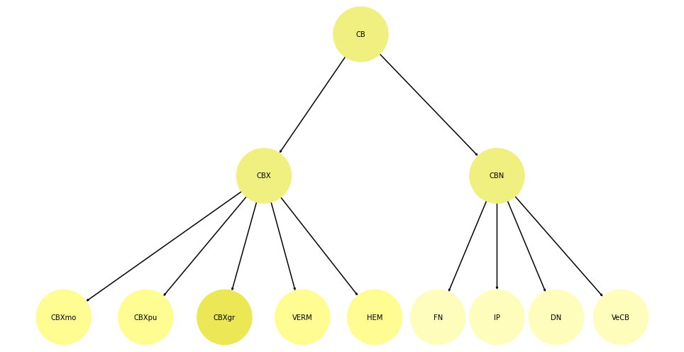
allen = load_allen()
from register.parcellation import get_major_masks
{
k: np.round(m.sum() / allen['isocortex_mask'].sum() * 100, 1)
for k, m in get_major_masks().items()
}
allen mouse atlas (res. 100um)
From: http://www.brain-map.org (Wang et al 2020, https://doi.org/10.1016/j.cell.2020.04.007 )
{ 'PAL': 7.5, 'STR': 36.6, 'CTXsp': 7.2, 'OLF': 37.7, 'HIP': 19.3, 'RHP': 15.0, 'IB': 28.7, 'MB': 29.8, 'HB': 38.6, 'CB': 43.6, 'VIS': 10.9, 'TEa': 2.5, 'PERI': 0.6, 'ECT': 1.4, 'RSP': 8.5, 'AUD': 4.7, 'PTLp': 2.0, 'VISC': 1.9, 'SS': 27.0, 'SSp': 19.7, 'SSp-bfd': 5.1, 'SSp-ll': 1.9, 'SSp-m': 5.1, 'SSp-n': 2.5, 'SSp-tr': 1.1, 'SSp-ul': 3.1, 'SSp-un': 1.0, 'SSs': 7.3, 'GU': 1.4, 'ACA': 4.5, 'AI': 6.4, 'MO': 19.9, 'MOp': 9.2, 'MOs': 10.6, 'ILA': 0.7, 'PL': 2.0, 'ORB': 4.8, 'FRP': 0.8 }
table = get_summary_table(structs=['ENT'])
print(table)
allen mouse atlas (res. 100um)
From: http://www.brain-map.org (Wang et al 2020, https://doi.org/10.1016/j.cell.2020.04.007 )
+-----+-----+-------------------------------------------+---------+----------+--------------- + | lvl | id | name | acronym | # voxels | relative size | +-----+-----+-------------------------------------------+---------+----------+--------------- + | --- | --- | --- | --- | --- | --- | | 7 | 909 | Entorhinal area | ENT | 11476 | 9 % | | --- | --- | --- | --- | --- | --- | | 8 | 918 | Entorhinal area, lateral part | ENTl | 6391 | 5 % | | 8 | 926 | Entorhinal area, medial part, dorsal zone | ENTm | 5085 | 4 % | | --- | --- | --- | --- | --- | --- | +-----+-----+-------------------------------------------+---------+----------+--------------- +
include_regions = [
'Striatum',
'Pallidum',
'Olfactory areas',
'Cortical subplate',
'Hippocampal formation',
'Isocortex',
]
allen['structure_tree'].get_structures_by_name(include_regions)
[ { 'acronym': 'STR', 'graph_id': 1, 'graph_order': 571, 'id': 477, 'name': 'Striatum', 'structure_id_path': [997, 8, 567, 623, 477], 'structure_set_ids': [ 2, 112905828, 691663206, 12, 184527634, 112905813, 687527670, 114512891, 114512892 ], 'rgb_triplet': [152, 214, 249] }, { 'acronym': 'PAL', 'graph_id': 1, 'graph_order': 608, 'id': 803, 'name': 'Pallidum', 'structure_id_path': [997, 8, 567, 623, 803], 'structure_set_ids': [ 2, 112905828, 691663206, 12, 184527634, 112905813, 687527670, 114512891, 114512892 ], 'rgb_triplet': [133, 153, 204] }, { 'acronym': 'OLF', 'graph_id': 1, 'graph_order': 379, 'id': 698, 'name': 'Olfactory areas', 'structure_id_path': [997, 8, 567, 688, 695, 698], 'structure_set_ids': [ 2, 3, 112905828, 691663206, 12, 184527634, 112905813, 687527670, 114512891, 114512892 ], 'rgb_triplet': [154, 210, 189] }, { 'acronym': 'CTXsp', 'graph_id': 1, 'graph_order': 555, 'id': 703, 'name': 'Cortical subplate', 'structure_id_path': [997, 8, 567, 688, 703], 'structure_set_ids': [ 2, 3, 112905828, 691663206, 12, 184527634, 687527670, 114512891 ], 'rgb_triplet': [138, 218, 135] }, { 'acronym': 'HPF', 'graph_id': 1, 'graph_order': 454, 'id': 1089, 'name': 'Hippocampal formation', 'structure_id_path': [997, 8, 567, 688, 695, 1089], 'structure_set_ids': [ 2, 112905828, 691663206, 12, 184527634, 112905813, 687527670, 114512891, 114512892 ], 'rgb_triplet': [126, 208, 75] }, { 'acronym': 'Isocortex', 'graph_id': 1, 'graph_order': 5, 'id': 315, 'name': 'Isocortex', 'structure_id_path': [997, 8, 567, 688, 695, 315], 'structure_set_ids': [ 2, 112905828, 691663206, 12, 184527634, 112905813, 687527670, 114512891, 114512892 ], 'rgb_triplet': [112, 255, 113] } ]
def regions_to_include(
allen: dict = None,
childs_of: List[str] = None,
extras: List[str] = None,
remove: List[str] = None, ):
allen = allen if allen else load_allen()
childs_of = childs_of if childs_of else [
'PAL',
'STR',
'OLF',
'HIP',
'ENT',
'RHP',
'MY',
'P',
'IB',
'TH',
'MB',
'CB',
'CBX',
'HEM',
]
extras = extras if extras else [
'CTXsp',
'Isocortex',
]
remove = remove if remove else [
'FC',
'IG',
# 'HB',
# 'DP',
# 'NLOT',
'ENTmv',
'CBXmo',
'CBXpu',
'CBXgr',
'MY-sat',
# 'HATA',
# 'APr',
]
structs = allen['structure_tree'].get_structures_by_acronym(childs_of)
children = allen['structure_tree'].children([e['id'] for e in structs])
children_acros = [e['acronym'] for item in children for e in item]
regions = [e for e in children_acros if e not in childs_of + remove]
regions += extras
return regions
regions = regions_to_include()
regions
[ 'PALd', 'PALv', 'PALm', 'PALc', 'STRd', 'STRv', 'LSX', 'sAMY', 'MOB', 'AOB', 'AON', 'TT', 'DP', 'PIR', 'NLOT', 'COA', 'PAA', 'TR', 'CA', 'DG', 'ENTl', 'ENTm', 'PAR', 'POST', 'PRE', 'SUB', 'ProS', 'HATA', 'APr', 'MY-sen', 'MY-mot', 'P-sen', 'P-mot', 'P-sat', 'HY', 'DORsm', 'DORpm', 'MBsen', 'MBmot', 'MBsta', 'CBN', 'VERM', 'SIM', 'AN', 'PRM', 'COPY', 'PFL', 'FL', 'CTXsp', 'Isocortex' ]
len(regions), len(set(regions))
(50, 50)
allen = load_allen()
structs = allen['structure_tree'].get_structures_by_acronym(regions)
for s in structs:
mask = allen['mcc'].get_structure_mask(s['id'])[0]
ratio = mask.sum() / allen['isocortex_mask'].sum() * 100
print(f"acro: {s['acronym']}\t# vox: {mask.sum()}\tratio: {ratio:.0f} %\tname: {s['name']}")
acro: PALd # vox: 1987 ratio: 2 % name: Pallidum, dorsal region
acro: PALv # vox: 3367 ratio: 3 % name: Pallidum, ventral region
acro: PALm # vox: 1484 ratio: 1 % name: Pallidum, medial region
acro: PALc # vox: 1349 ratio: 1 % name: Pallidum, caudal region
acro: STRd # vox: 26040 ratio: 21 % name: Striatum dorsal region
acro: STRv # vox: 8699 ratio: 7 % name: Striatum ventral region
acro: LSX # vox: 3584 ratio: 3 % name: Lateral septal complex
acro: sAMY # vox: 4057 ratio: 3 % name: Striatum-like amygdalar nuclei
acro: MOB # vox: 16406 ratio: 13 % name: Main olfactory bulb
acro: AOB # vox: 650 ratio: 1 % name: Accessory olfactory bulb
acro: AON # vox: 4880 ratio: 4 % name: Anterior olfactory nucleus
acro: TT # vox: 1431 ratio: 1 % name: Taenia tecta
acro: DP # vox: 482 ratio: 0 % name: Dorsal peduncular area
acro: PIR # vox: 11591 ratio: 9 % name: Piriform area
acro: NLOT # vox: 311 ratio: 0 % name: Nucleus of the lateral olfactory tract
acro: COA # vox: 3258 ratio: 3 % name: Cortical amygdalar area
acro: PAA # vox: 1235 ratio: 1 % name: Piriform-amygdalar area
acro: TR # vox: 1323 ratio: 1 % name: Postpiriform transition area
acro: CA # vox: 17018 ratio: 14 % name: Ammon's horn
acro: DG # vox: 6571 ratio: 5 % name: Dentate gyrus
acro: ENTl # vox: 6391 ratio: 5 % name: Entorhinal area, lateral part
acro: ENTm # vox: 5085 ratio: 4 % name: Entorhinal area, medial part, dorsal zone
acro: PAR # vox: 930 ratio: 1 % name: Parasubiculum
acro: POST # vox: 1074 ratio: 1 % name: Postsubiculum
acro: PRE # vox: 906 ratio: 1 % name: Presubiculum
acro: SUB # vox: 2146 ratio: 2 % name: Subiculum
acro: ProS # vox: 1185 ratio: 1 % name: Prosubiculum
acro: HATA # vox: 420 ratio: 0 % name: Hippocampo-amygdalar transition area
acro: APr # vox: 361 ratio: 0 % name: Area prostriata
acro: MY-sen # vox: 7891 ratio: 6 % name: Medulla, sensory related
acro: MY-mot # vox: 17471 ratio: 14 % name: Medulla, motor related
acro: P-sen # vox: 3893 ratio: 3 % name: Pons, sensory related
acro: P-mot # vox: 5772 ratio: 5 % name: Pons, motor related
acro: P-sat # vox: 3427 ratio: 3 % name: Pons, behavioral state related
acro: HY # vox: 15066 ratio: 12 % name: Hypothalamus
acro: DORsm # vox: 6697 ratio: 5 % name: Thalamus, sensory-motor cortex related
acro: DORpm # vox: 12698 ratio: 10 % name: Thalamus, polymodal association cortex related
acro: MBsen # vox: 6838 ratio: 6 % name: Midbrain, sensory related
acro: MBmot # vox: 21343 ratio: 17 % name: Midbrain, motor related
acro: MBsta # vox: 1813 ratio: 1 % name: Midbrain, behavioral state related
acro: CBN # vox: 1770 ratio: 1 % name: Cerebellar nuclei
acro: VERM # vox: 20243 ratio: 16 % name: Vermal regions
acro: SIM # vox: 5709 ratio: 5 % name: Simple lobule
acro: AN # vox: 10778 ratio: 9 % name: Ansiform lobule
acro: PRM # vox: 4866 ratio: 4 % name: Paramedian lobule
acro: COPY # vox: 2490 ratio: 2 % name: Copula pyramidis
acro: PFL # vox: 5742 ratio: 5 % name: Paraflocculus
acro: FL # vox: 1310 ratio: 1 % name: Flocculus
acro: CTXsp # vox: 8850 ratio: 7 % name: Cortical subplate
acro: Isocortex # vox: 123245 ratio: 100 % name: Isocortex
s['acronym']
'Isocortex'
structs = allen['structure_tree'].get_structures_by_acronym(['NLOT'])
struct_ids = [e['id'] for e in structs]
struct_ids
[619]
allen['structure_tree'].children(struct_ids)
[ [ { 'acronym': 'DP1', 'graph_id': 1, 'graph_order': 411, 'id': 496, 'name': 'Dorsal peduncular area, layer 1', 'structure_id_path': [997, 8, 567, 688, 695, 698, 814, 496], 'structure_set_ids': [12], 'rgb_triplet': [164, 218, 164] }, { 'acronym': 'DP2', 'graph_id': 1, 'graph_order': 412, 'id': 535, 'name': 'Dorsal peduncular area, layer 2', 'structure_id_path': [997, 8, 567, 688, 695, 698, 814, 535], 'structure_set_ids': [], 'rgb_triplet': [164, 218, 164] }, { 'acronym': 'DP2/3', 'graph_id': 1, 'graph_order': 413, 'id': 360, 'name': 'Dorsal peduncular area, layer 2/3', 'structure_id_path': [997, 8, 567, 688, 695, 698, 814, 360], 'structure_set_ids': [12], 'rgb_triplet': [164, 218, 164] }, { 'acronym': 'DP5', 'graph_id': 1, 'graph_order': 414, 'id': 646, 'name': 'Dorsal peduncular area, layer 5', 'structure_id_path': [997, 8, 567, 688, 695, 698, 814, 646], 'structure_set_ids': [12], 'rgb_triplet': [164, 218, 164] }, { 'acronym': 'DP6a', 'graph_id': 1, 'graph_order': 415, 'id': 267, 'name': 'Dorsal peduncular area, layer 6a', 'structure_id_path': [997, 8, 567, 688, 695, 698, 814, 267], 'structure_set_ids': [12], 'rgb_triplet': [164, 218, 164] } ] ]
ref_space = allen['mcc'].get_reference_space()
for identifier, m in ref_space.many_structure_masks([672, 485]):
print(identifier)
plt.imshow(m.mean(1))
plt.title(m.sum())
plt.show()
672
485

(m > 0).sum()
1373
s = allen['structure_tree'].get_structures_by_acronym(['APr'])[0]
m = allen['mcc'].get_structure_mask(s['id'])[0]
m.sum()
361
space = 'CCF'
key_space = f"space-{space}"
mice = Mice(Config(128), load_preproc=True, load_df=False)
_masks_all = {}
for key, anat in tqdm(mice.T1w.items()):
moving = anat.get_data()
if moving is None:
continue
moving = reorient_arr(moving)
moving = reset_ants_img(moving)
tx = '_'.join([key, key_space, 'ants-SyN'])
tx = list(filter(lambda f: tx in f, os.listdir(mice.cfg.tx_dir)))
tx = [pjoin(mice.cfg.tx_dir, f) for f in sorted(tx)]
m_inv = ants.apply_transforms(
fixed=moving,
moving=reset_ants_img(m),
transformlist=tx,
interpolator='genericLabel',
).numpy().astype(bool)
print(key, m_inv.sum(), m.sum() / m_inv.sum())
sub-SLC01_ses-1 35 10.314285714285715
sub-SLC01_ses-2 33 10.93939393939394
sub-SLC01_ses-3 33 10.93939393939394
sub-SLC02_ses-1 34 10.617647058823529
sub-SLC02_ses-2 31 11.64516129032258
sub-SLC02_ses-3 34 10.617647058823529
sub-SLC03_ses-1 32 11.28125
sub-SLC03_ses-2 35 10.314285714285715
sub-SLC03_ses-3 36 10.027777777777779
sub-SLC04_ses-1 34 10.617647058823529
sub-SLC04_ses-2 42 8.595238095238095
sub-SLC04_ses-3 29 12.448275862068966
sub-SLC05_ses-1 41 8.804878048780488
sub-SLC05_ses-2 35 10.314285714285715
sub-SLC05_ses-3 34 10.617647058823529
sub-SLC06_ses-1 33 10.93939393939394
sub-SLC06_ses-2 36 10.027777777777779
sub-SLC06_ses-3 34 10.617647058823529
sub-SLC07_ses-1 33 10.93939393939394
sub-SLC07_ses-2 37 9.756756756756756
sub-SLC07_ses-3 32 11.28125
sub-SLC08_ses-1 31 11.64516129032258
sub-SLC08_ses-2 33 10.93939393939394
sub-SLC08_ses-3 31 11.64516129032258
sub-SLC09_ses-1 32 11.28125
sub-SLC09_ses-2 39 9.256410256410257
sub-SLC09_ses-3 35 10.314285714285715
sub-SLC10_ses-1 37 9.756756756756756
sub-SLC10_ses-2 32 11.28125
sub-SLC10_ses-3 29 12.448275862068966
m_inv.sum()
29
m.sum() / m_inv.sum()
12.448275862068966
from bg_atlasapi import show_atlases
show_atlases()
Brainglobe Atlases ╭──────────────────────────────────┬────────────┬───────────────┬────────────────╮ │ Name │ Downloaded │ Local version │ Latest version │ ├──────────────────────────────────┼────────────┼───────────────┼────────────────┤ │ mpin_zfish_1um │ ✔ │ 1.0 │ 1.0 │ │ kim_mouse_100um │ ✔ │ 1.0 │ 1.0 │ │ allen_mouse_100um │ ✔ │ 1.2 │ 1.2 │ │ example_mouse_100um │ --- │ --- │ 1.2 │ │ allen_mouse_10um │ --- │ --- │ 1.2 │ │ allen_mouse_25um │ --- │ --- │ 1.2 │ │ allen_mouse_50um │ --- │ --- │ 1.2 │ │ allen_human_500um │ --- │ --- │ 0.1 │ │ kim_mouse_10um │ --- │ --- │ 1.0 │ │ kim_mouse_25um │ --- │ --- │ 1.0 │ │ kim_mouse_50um │ --- │ --- │ 1.0 │ │ osten_mouse_10um │ --- │ --- │ 1.1 │ │ osten_mouse_25um │ --- │ --- │ 1.1 │ │ osten_mouse_50um │ --- │ --- │ 1.1 │ │ osten_mouse_100um │ --- │ --- │ 1.1 │ ╰──────────────────────────────────┴────────────┴───────────────┴────────────────╯
from bg_atlasapi import BrainGlobeAtlas
a = BrainGlobeAtlas('allen_mouse_100um')
b = BrainGlobeAtlas('kim_mouse_100um')
allen mouse atlas (res. 100um)
From: http://www.brain-map.org (Wang et al 2020, https://doi.org/10.1016/j.cell.2020.04.007 )
kim mouse atlas (res. 100um)
From: https://kimlab.io/brain-map/atlas/ (Chon et al. 2019, https://doi.org/10.1038/s41467-019-13057-w )
a.annotation.shape
(132, 80, 114)
map_a = {j: i for i, j in enumerate(np.unique(a.annotation))}
map_b = {j: i for i, j in enumerate(np.unique(b.annotation))}
annot_a = a.annotation.copy()
annot_b = b.annotation.copy()
for j, i in map_a.items():
annot_a[annot_a == j] = i
for j, i in map_b.items():
annot_b[annot_b == j] = i
fig, axes = create_figure(1, 2, (12, 8))
axes[0].imshow(annot_a[:, 40, :])
axes[1].imshow(annot_b[:, 40, :])
<matplotlib.image.AxesImage object at 0x7fd7a12460a0>
Fit SVINET¶
k = 5
p = -1
start = time()
svinet = SVINET(
mice=mice,
num_k=k,
perc=p,
key=key,
mode=mode,
metric=metric,
match_metric=match_metric,
verbose=True,
).load_runs(svinet_ws).fit()
convert_time(time()-start)
current expt: 'p-1'
[PROGRESS] experiment loaded: 'p26', total # runs: 4895
[PROGRESS] some runs were excluded: 104 x k = 4, 1 x k = 3
[PROGRESS] experiment loaded: 'p25', total # runs: 4931
[PROGRESS] some runs were excluded: 68 x k = 4, 1 x k = 3
[PROGRESS] experiment loaded: 'p24', total # runs: 4930
[PROGRESS] some runs were excluded: 70 x k = 4
[PROGRESS] experiment loaded: 'p23', total # runs: 4958
[PROGRESS] some runs were excluded: 42 x k = 4
[PROGRESS] experiment loaded: 'p22', total # runs: 4971
[PROGRESS] some runs were excluded: 29 x k = 4
[PROGRESS] experiment loaded: 'p21', total # runs: 4981
[PROGRESS] some runs were excluded: 19 x k = 4
[PROGRESS] experiment loaded: 'p20', total # runs: 4992
[PROGRESS] some runs were excluded: 8 x k = 4
[PROGRESS] fit: initiated
[PROGRESS] kmeans fit: done
[PROGRESS] find best mappings: done
[PROGRESS] results aligned: done
[PROGRESS] membership df: done
[PROGRESS] 'result.npy' saved at /home/hadi/Documents/Ca-fMRI/processed/norm-global_parcel-spatial-sym_n-128/results/SVINET/bo ld_spearman_sub-SLC07_n128/p-1/k5-cosine-linksampling-(2021_07_22)
[PROGRESS] 'perf.df' saved at /home/hadi/Documents/Ca-fMRI/processed/norm-global_parcel-spatial-sym_n-128/results/SVINET/bo ld_spearman_sub-SLC07_n128/p-1/k5-cosine-linksampling-(2021_07_22)
[PROGRESS] 'pi_cut.df' saved at /home/hadi/Documents/Ca-fMRI/processed/norm-global_parcel-spatial-sym_n-128/results/SVINET/bo ld_spearman_sub-SLC07_n128/p-1/k5-cosine-linksampling-(2021_07_22)
[PROGRESS] process results: done
Scene saved at /home/hadi/Documents/Ca-fMRI/processed/norm-global_parcel-spatial-sym_n-128/re sults/SVINET/bold_spearman_sub-SLC07_n128/p-1/k5-cosine-linksampling-(2021_07_22)/render/over lap_cortex_k5.html
Scene saved at /home/hadi/Documents/Ca-fMRI/processed/norm-global_parcel-spatial-sym_n-128/re sults/SVINET/bold_spearman_sub-SLC07_n128/p-1/k5-cosine-linksampling-(2021_07_22)/render/disj oint_cortex_k5.html
Scene saved at /home/hadi/Documents/Ca-fMRI/processed/norm-global_parcel-spatial-sym_n-128/re sults/SVINET/bold_spearman_sub-SLC07_n128/p-1/k5-cosine-linksampling-(2021_07_22)/render/over lap_brain_k5.html
Scene saved at /home/hadi/Documents/Ca-fMRI/processed/norm-global_parcel-spatial-sym_n-128/re sults/SVINET/bold_spearman_sub-SLC07_n128/p-1/k5-cosine-linksampling-(2021_07_22)/render/disj oint_brain_k5.html
[PROGRESS] fit: done!
00 - 00:15:04 (dd - hh:mm:ss)
svinet.scores()
+---------------+-------+-------+ | type | over | score | +---------------+-------+-------+ | pi symmetry | oc1 | 0.97 | | pi symmetry | oc2 | 0.97 | | pi symmetry | oc3 | 0.97 | | pi symmetry | oc4 | 0.94 | | pi symmetry | oc5 | 0.93 | | pi symmetry | avg | 0.95 | | --- | --- | --- | | entropy score | nodes | 0.92 | | --- | --- | --- | | cosine | nodes | 0.85 | | correlation | nodes | 0.78 | | braycurtis | nodes | 0.7 | | jensenshannon | nodes | 0.71 | +---------------+-------+-------+
"""
list(svinet._runs)
_ = svinet._runs.pop(20)
svinet.fit()
"""
"""
mice = Mice(Config(128))
mice.combine_dfs('rest')
svinet = SVINET(mice, 5, -1, key, verbose=True).load_results()
"""
svinet.path.split('/')
[ '', 'home', 'hadi', 'Documents', 'Ca-fMRI', 'processed', 'norm-global_parcel-spatial-sym_n-128', 'results', 'SVINET', 'bold_spearman_sub-SLC_n128', 'p-1', 'k5-cosine-linksampling-(2021_07_20)' ]
list(svinet.get_result_dict())[:5]
[ 'n138-k5-mmsb-seed1-linksampling-p35', 'n138-k5-mmsb-seed2-linksampling-p35', 'n138-k5-mmsb-seed3-linksampling-p35', 'n138-k5-mmsb-seed4-linksampling-p35', 'n138-k5-mmsb-seed5-linksampling-p35' ]
pi_all = collections.defaultdict(list)
for name, run in svinet.get_result_dict().items():
p = int(name.split('-')[-1][1:])
pi_all[p].append(np.expand_dims(run['pi'], axis=0))
pi_various = {}
for k, v in pi_all.items():
pi_various[k] = np.concatenate(v).mean(0)
list(pi_various)
[26, 25, 24, 23, 22, 21, 20]
masks = svinet.masks_from_pi(pi_various[20], disjoint=True, cortex_only=True)
fig, axes = create_figure(1, svinet.num_k, (13.5, 3.5))
for idx in range(1, svinet.num_k + 1):
x = project_vol_2d(masks[idx], mice.allen['dims_flat'], mode='max_proj')
axes[idx-1].imshow(x, cmap=svinet.cmaps[idx])
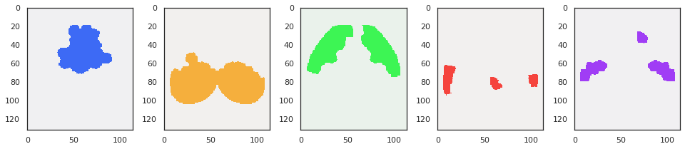
masks = svinet.masks_from_pi(pi_various[26], disjoint=True, cortex_only=True)
fig, axes = create_figure(1, svinet.num_k, (13.5, 3.5))
for idx in range(1, svinet.num_k + 1):
x = project_vol_2d(masks[idx], mice.allen['dims_flat'], mode='max_proj')
axes[idx-1].imshow(x, cmap=svinet.cmaps[idx])
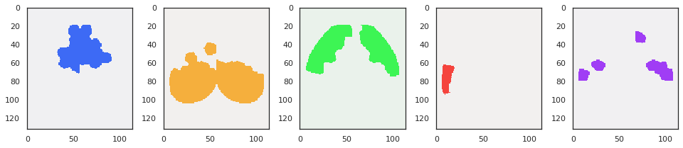
np.linspace(23, 19, 5)
array([23., 22., 21., 20., 19.])
np.linspace(23, 19, 5)
23 - 19 + 1
5
np.linspace(29, 20, 10)
array([29., 28., 27., 26., 25., 24., 23., 22., 21., 20.])
svinet.scores()
+---------------+-------+-------+ | type | over | score | +---------------+-------+-------+ | pi symmetry | oc1 | 0.98 | | pi symmetry | oc2 | 0.85 | | pi symmetry | oc3 | 0.98 | | pi symmetry | oc4 | 0.86 | | pi symmetry | oc5 | 0.97 | | pi symmetry | oc6 | 0.86 | | pi symmetry | avg | 0.92 | | --- | --- | --- | | entropy score | nodes | 0.91 | | --- | --- | --- | | cosine | nodes | 0.87 | | correlation | nodes | 0.82 | | braycurtis | nodes | 0.74 | | jensenshannon | nodes | 0.74 | +---------------+-------+-------+
len(svinet.get_result_dict())
36563
len(svinet.get_result_dict())
18489
list(svinet.get_result_dict())[:10]
[ 'n138-k5-mmsb-seed1-linksampling-p35', 'n138-k5-mmsb-seed2-linksampling-p35', 'n138-k5-mmsb-seed3-linksampling-p35', 'n138-k5-mmsb-seed4-linksampling-p35', 'n138-k5-mmsb-seed5-linksampling-p35', 'n138-k5-mmsb-seed6-linksampling-p35', 'n138-k5-mmsb-seed7-linksampling-p35', 'n138-k5-mmsb-seed8-linksampling-p35', 'n138-k5-mmsb-seed9-linksampling-p35', 'n138-k5-mmsb-seed10-linksampling-p35' ]
start = time()
svinet = SVINET(
mice=mice,
num_k=6,
perc=-1,
key=key,
mode=mode,
metric=metric,
match_metric=match_metric,
verbose=True,
).load_results(full_process=True)
convert_time(time()-start)
current expt: 'p-1'
[PROGRESS] loading 'k6-cosine-linksampling-(2021_07_20)' from '/home/hadi/Documents/Ca-fMRI/processed/norm-global_parcel-spatial-sym_n-128/results/SVINET/b old_spearman_sub-SLC_n128/p-1'
[PROGRESS] process results: done
[PROGRESS] 50 results loaded
00 - 00:00:23 (dd - hh:mm:ss)
_ = svinet.plot_memberships_2d()
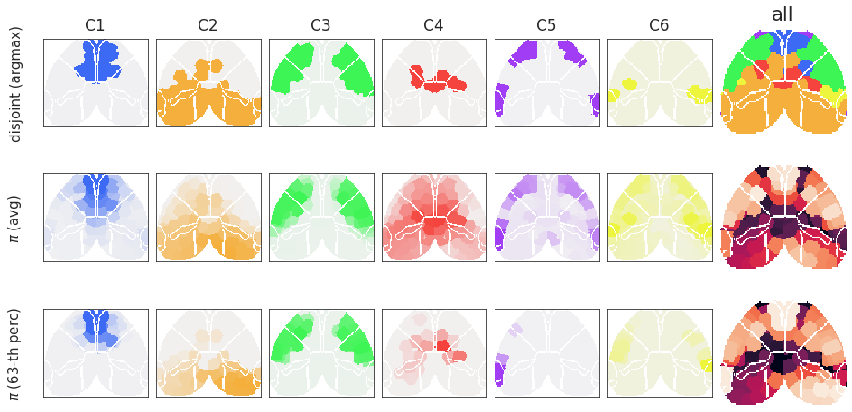
svinet.perf_df
| oc_idx | p | run | metric | score | |
|---|---|---|---|---|---|
| 0 | 1 | 35 | n138-k6-mmsb-seed1-linksampling | cosine | 0.065448 |
| 1 | 2 | 35 | n138-k6-mmsb-seed1-linksampling | cosine | 0.872947 |
| 2 | 3 | 35 | n138-k6-mmsb-seed1-linksampling | cosine | 0.963539 |
| 3 | 4 | 35 | n138-k6-mmsb-seed1-linksampling | cosine | 0.695601 |
| 4 | 5 | 35 | n138-k6-mmsb-seed1-linksampling | cosine | 0.786379 |
| ... | ... | ... | ... | ... | ... |
| 512675 | 6 | 17 | n138-k6-mmsb-seed1000-linksampling | jensenshannon | 0.466115 |
| 512676 | all | 17 | n138-k6-mmsb-seed1000-linksampling | cosine | 0.753825 |
| 512677 | all | 17 | n138-k6-mmsb-seed1000-linksampling | correlation | 0.675412 |
| 512678 | all | 17 | n138-k6-mmsb-seed1000-linksampling | braycurtis | 0.585393 |
| 512679 | all | 17 | n138-k6-mmsb-seed1000-linksampling | jensenshannon | 0.616989 |
512680 rows × 5 columns
df = svinet.perf_df
_df = df.loc[df.oc_idx == 'all']
fig, ax = create_figure(1, 1, (10, 7))
sns.lineplot(
data=_df,
x='p',
y='score',
hue='metric',
style='metric',
markers=True,
markersize=10,
ax=ax,
)
ax.grid(axis='both')
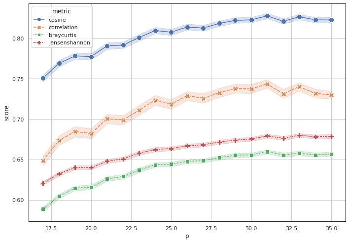
Load¶
h = {}
pi = {}
dict_list = []
for k in tqdm([4, 5, 6]):
for p in [10, 15, 20, 25, 30]:
svinet = SVINET(
mice=mice,
num_k=k,
perc=p,
key=key,
mode=mode,
metric=metric,
match_metric=match_metric,
verbose=False,
).load_results(full_process=False)
h[f"k{k}-p{p}"] = svinet.h
pi[f"k{k}-p{p}"] = svinet.pi
scores = svinet.pi_symmetry_score(decimals=10)
data_dict = {
'k': [k] * len(scores),
'p': [p] * len(scores),
'measure': ['pi_symm'] * len(scores),
'score': scores.values(),
'oc_idx': scores.keys(),
}
dict_list.append(data_dict)
scores = svinet.node_similarity_score(decimals=10)
data_dict = {
'k': [k] * len(scores),
'p': [p] * len(scores),
'measure': scores.keys(),
'score': scores.values(),
'oc_idx': [-1] * len(scores),
}
dict_list.append(data_dict)
data_dict = {
'k': [k],
'p': [p],
'measure': ['entropy'],
'score': [svinet.entropy_score(decimals=10)],
'oc_idx': [-1],
}
dict_list.append(data_dict)
df = pd.DataFrame(merge_dicts(dict_list))
svinet.scores()
+---------------+-------+-------+ | type | over | score | +---------------+-------+-------+ | pi symmetry | oc1 | 0.97 | | pi symmetry | oc2 | 0.97 | | pi symmetry | oc3 | 0.97 | | pi symmetry | oc4 | 0.89 | | pi symmetry | oc5 | 0.95 | | pi symmetry | oc6 | 0.97 | | pi symmetry | avg | 0.95 | | --- | --- | --- | | entropy score | nodes | 0.96 | | --- | --- | --- | | cosine | nodes | 0.83 | | correlation | nodes | 0.75 | | braycurtis | nodes | 0.67 | | jensenshannon | nodes | 0.69 | +---------------+-------+-------+
df
| k | p | measure | score | oc_idx | |
|---|---|---|---|---|---|
| 0 | 4 | 10 | pi_symm | 0.942348 | 1 |
| 1 | 4 | 10 | pi_symm | 0.969062 | 2 |
| 2 | 4 | 10 | pi_symm | 0.967749 | 3 |
| 3 | 4 | 10 | pi_symm | 0.891734 | 4 |
| 4 | 4 | 10 | pi_symm | 0.942723 | -1 |
| ... | ... | ... | ... | ... | ... |
| 160 | 6 | 30 | cosine | 0.830561 | -1 |
| 161 | 6 | 30 | correlation | 0.751082 | -1 |
| 162 | 6 | 30 | braycurtis | 0.674990 | -1 |
| 163 | 6 | 30 | jensenshannon | 0.689412 | -1 |
| 164 | 6 | 30 | entropy | 0.961725 | -1 |
165 rows × 5 columns
fig, axes = create_figure(1, 2, (12, 5), 'ticks')
_df = df.loc[
df.measure.isin(['cosine', 'entropy', 'pi_sym']) &
(df.oc_idx == -1)
]
meanprops = {
"marker": "o",
"markerfacecolor": "bisque",
"markeredgecolor": "black",
"markersize": "8",
}
for i in range(2):
sns.boxplot(
data=_df,
hue='k' if i == 0 else 'p',
x='p' if i == 0 else 'k',
y='score',
showmeans=True,
meanprops=meanprops,
ax=axes[i],
)
axes[i].grid(axis='y')
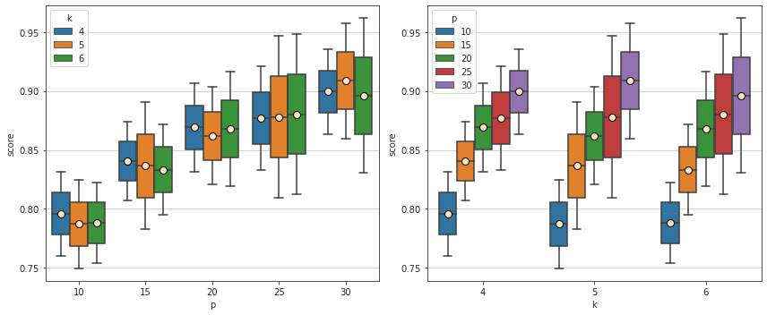
fig, axes = create_figure(1, 2, (12, 5), 'ticks')
_df = df.loc[
(df.measure == 'pi_symm') &
(df.oc_idx == -1)
]
meanprops = {
"marker": "o",
"markerfacecolor": "bisque",
"markeredgecolor": "black",
"markersize": "8",
}
for i in range(2):
sns.boxplot(
data=_df,
hue='k' if i == 0 else 'p',
x='p' if i == 0 else 'k',
y='score',
showmeans=True,
meanprops=meanprops,
ax=axes[i],
)
axes[i].grid(axis='y')
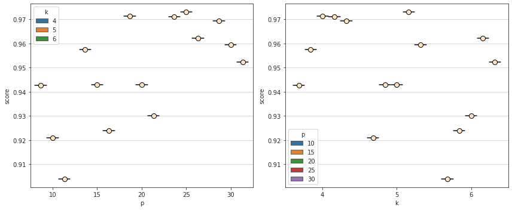
pi_algn = {}
for k in [4, 5, 6]:
for p in [10, 15, 20, 25, 30]:
x1 = pi[f"k{k}-p{25}"]
x2 = pi[f"k{k}-p{p}"]
d = sp_dist.cdist(x1, x2, metric='cosine')
sim = dist2sim(d)
mapping = find_best_match(sim)
if any(k != v for k, v in mapping.items()):
print(k, p, mapping)
pi_algn[f"k{k}-p{p}"] = x2[list(mapping.values())]
4 15 {0: 3, 1: 1, 2: 2, 3: 0}
4 20 {0: 3, 1: 1, 2: 2, 3: 0}
5 10 {0: 0, 1: 1, 2: 2, 3: 4, 4: 3}
5 30 {0: 0, 1: 1, 2: 2, 3: 4, 4: 3}
6 10 {0: 0, 1: 1, 2: 2, 3: 5, 4: 4, 5: 3}
dict_list = []
for k in [4, 5, 6]:
for p1, p2 in itertools.combinations([10, 15, 20, 25, 30], 2):
x1 = pi[f"k{k}-p{p1}"]
x2 = pi[f"k{k}-p{p2}"]
d = sp_dist.cdist(x1, x2, metric='cosine')
sim = dist2sim(d)
mapping = find_best_match(sim)
sim = sim[:, list(mapping.values())]
sim = np.diag(sim)
data_dict = {
'k': [k] * len(sim),
'p1': [p1] * len(sim),
'p2': [p2] * len(sim),
'sim': ['pi'] * len(sim),
'val': sim,
}
dict_list.append(data_dict)
x1 = h[f"k{k}-p{p1}"]
x2 = h[f"k{k}-p{p2}"]
d = sp_dist.cosine(x1, x2)
sim = dist2sim(d)
data_dict = {
'k': [k],
'p1': [p1],
'p2': [p2],
'sim': ['h'],
'val': [sim],
}
dict_list.append(data_dict)
df_sim = pd.DataFrame(merge_dicts(dict_list))
cmap = sns.cubehelix_palette(
start=1,
dark=0.10,
light=0.90,
rot=0.7,
reverse=True,
as_cmap=True,
)
display_cmap(cmap)
fig, axes = create_figure(2, 3, (13, 9), 'ticks', 'all', 'all', constrained_layout=False, tight_layout=True)
for j, k in enumerate([4, 5, 6]):
for i in range(2):
sim = 'pi' if i == 0 else 'h'
_df = df_sim.loc[
(df_sim.sim == sim) &
(df_sim.k == k)
]
_df = _df.groupby(['p1', 'p2']).mean().unstack().val
sns.heatmap(
data=_df,
square=True,
annot=True,
fmt='.2f',
cmap=cmap,
annot_kws={'fontsize': 14},
cbar_kws={'shrink': 0.6},
ax=axes[i, j],
)
axes[i, j].set_title(f"k = {k}, sim = {sim}", fontsize=15)
axes[i, j].tick_params('both', labelsize=12)
axes[i, j].xaxis.label.set_fontsize(12)
axes[i, j].yaxis.label.set_fontsize(12)
axes[i, j].grid()
plt.show()
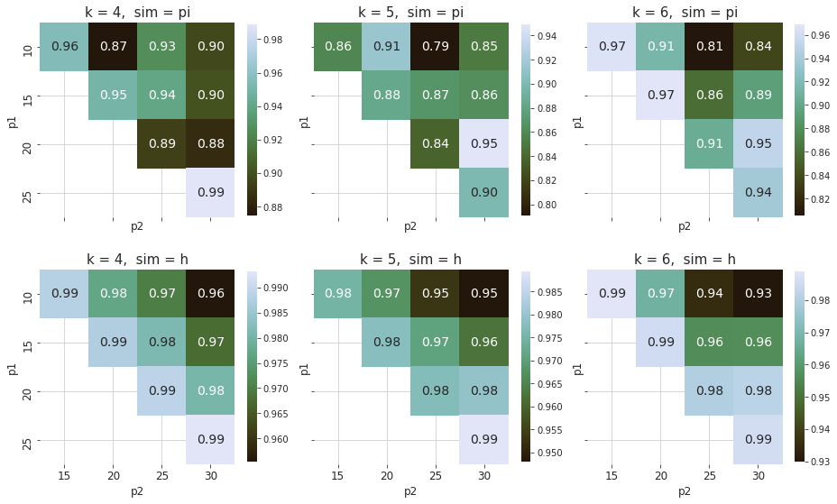
k = 6
pi_global = dict(filter(
lambda x: f"k{k}" in x[0] and f"p{10}" not in x[0] and f"p{15}" not in x[0],
pi_algn.items()
))
pi_global = [np.expand_dims(v, axis=0) for v in pi_global.values()]
pi_global = np.concatenate(pi_global).mean(0)
pi_global.shape
(6, 138)
masks = svinet.masks_from_pi(pi_global, disjoint=True, cortex_only=True)
fig, axes = create_figure(1, k, (13.5, 3.5))
for idx in range(1, k + 1):
x = project_vol_2d(masks[idx], mice.allen['dims_flat'], mode='max_proj')
axes[idx-1].imshow(x, cmap=svinet.cmaps[idx])
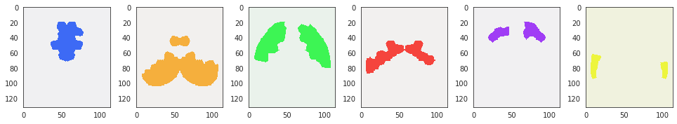
svinet.pi_symmetry_score(pi_global)
{1: 0.97, 2: 0.97, 3: 0.97, 4: 0.9, 5: 0.97, 6: 0.97, -1: 0.96}
svinet = SVINET(
mice=mice,
num_k=6,
perc=30,
key=key,
mode=mode,
metric=metric,
match_metric=match_metric,
verbose=False,
).load_results(full_process=False)
svinet.scores()
+---------------+-------+-------+ | type | over | score | +---------------+-------+-------+ | pi symmetry | oc1 | 0.97 | | pi symmetry | oc2 | 0.97 | | pi symmetry | oc3 | 0.97 | | pi symmetry | oc4 | 0.89 | | pi symmetry | oc5 | 0.95 | | pi symmetry | oc6 | 0.97 | | pi symmetry | avg | 0.95 | | --- | --- | --- | | entropy score | nodes | 0.96 | | --- | --- | --- | | cosine | nodes | 0.83 | | correlation | nodes | 0.75 | | braycurtis | nodes | 0.67 | | jensenshannon | nodes | 0.69 | +---------------+-------+-------+
k = 6
p = 30
start = time()
svinet = SVINET(
mice=mice,
num_k=k,
perc=p,
key=key,
mode=mode,
metric=metric,
match_metric=match_metric,
verbose=False,
).load_results(full_process=False)
convert_time(time()-start)
00 - 00:00:03 (dd - hh:mm:ss)
svinet.perc
30
svinet.path.split('/')
[ '', 'home', 'hadi', 'Documents', 'Ca-fMRI', 'processed', 'norm-global_parcel-spatial-sym_n-128', 'results', 'SVINET', 'bold_spearman_sub-SLC_n128', 'p30', 'k6-cosine-linksampling-(2021_07_18)' ]
Group centralities¶
community = {
idx: [svinet.l2n[region] for region in x]
for idx, x in svinet.disjoint_community().items()
}
dict_list = []
for lbl, f in svinet._group_centrality_fn.items():
for idx, comm_list in community.items():
data_dict = {
'measure': [lbl],
'oc_idx': [idx],
'centrality': [f(svinet.graphs[svinet.perc], comm_list)],
}
dict_list.append(data_dict)
grp_cent_df = pd.DataFrame(merge_dicts(dict_list))
fig, ax = create_figure(1, 1, (8, 5), 'ticks')
sns.barplot(
data=grp_cent_df,
x='measure',
y='centrality',
hue='oc_idx',
palette=svinet.colors,
saturation=0.7,
ax=ax,
)
plt.show()
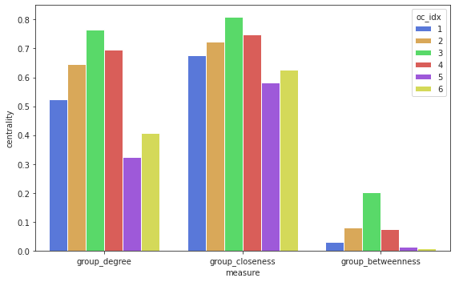
_df = grp_cent_df.groupby(['oc_idx', 'measure']).mean().unstack()
_df = _df.centrality
_df
| measure | group_betweenness | group_closeness | group_degree |
|---|---|---|---|
| oc_idx | |||
| 1 | 0.028840 | 0.677778 | 0.524590 |
| 2 | 0.080407 | 0.722628 | 0.646465 |
| 3 | 0.201496 | 0.809524 | 0.764706 |
| 4 | 0.074770 | 0.748538 | 0.695312 |
| 5 | 0.014117 | 0.583333 | 0.323308 |
| 6 | 0.007198 | 0.627551 | 0.406504 |
a = np.quantile(svinet.h, 0.1)
b = np.quantile(svinet.h, 0.9)
a, b
(0.33322464873319796, 0.8307728354552402)
low_ent = np.where(svinet.h < a)[0]
high_ent = np.where(svinet.h > b)[0]
svinet.h[low_ent].mean(), svinet.h[high_ent].mean()
(0.2558562445620093, 0.8872217300659501)
dict_list = []
for lbl, f in net._group_centrality_fn.items():
for tag, group in {'low': low_ent, 'high': high_ent, }.items():
data_dict = {
'measure': [lbl],
'tag': [tag],
'centrality': [f(net.graphs[svinet.expt_name], group)],
}
dict_list.append(data_dict)
grp_cent_df = pd.DataFrame(merge_dicts(dict_list))
fig, ax = create_figure(1, 1, (6, 4), 'ticks')
sns.barplot(
data=grp_cent_df,
x='measure',
y='centrality',
hue='tag',
palette='tab10',
saturation=0.7,
ax=ax,
)
plt.show()
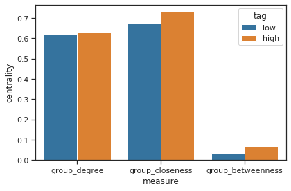
high_ent = [
mice.parcel.results['eroded_masks'][int(net.n2l[n].split('-')[-1])]
for n in high_ent if str(315) in net.n2l[n]
]
low_ent = [
mice.parcel.results['eroded_masks'][int(net.n2l[n].split('-')[-1])]
for n in low_ent if str(315) in net.n2l[n]
]
mask_high_ent = functools.reduce(np.logical_or, high_ent)
mask_low_ent = functools.reduce(np.logical_or, low_ent)
_ = parcel2html(
masks={0: mask_high_ent},
save_dir=extras_dir,
save_name='high_entropy',
cmap=sns.light_palette('C3', as_cmap=True, reverse=True),
alpha=0.8,
alpha_base=0.2,
alpha_root=0.1,
)
Scene saved at /home/hadi/Dropbox/git/jb-Ca-fMRI/_extras/high_entropy_k1.html
_ = parcel2html(
masks={0: mask_low_ent},
save_dir=extras_dir,
save_name='low_entropy',
cmap=sns.light_palette('C0', as_cmap=True, reverse=True),
alpha=0.8,
alpha_base=0.2,
alpha_root=0.1,
)
Scene saved at /home/hadi/Dropbox/git/jb-Ca-fMRI/_extras/low_entropy_k1.html
sns.set_theme(style='white', palette='deep')
save_dir = svinet.get_save_path('region_plots')
measure = 'degree_w'
_df = cent_df.loc[cent_df.measure.isin([measure, 'entropy'])]
_df = _df.groupby(['node', 'measure']).mean().unstack()
_df = _df.centrality
_df = pd.concat([_df, pd.DataFrame({'oc_idx': partition})], axis=1)
selected_nodes = dict(filter(lambda x: str(315) not in x[0], net.l2n.items()))
_df = _df.iloc[list(selected_nodes.values())]
jg = sns.JointGrid(
data=_df,
x='entropy',
y=measure,
hue='oc_idx',
size=9,
palette=svinet.colors,
xlim=(0, 1),
ylim=(0, 1),
space=0.0,
)
jg.plot_joint(
sns.scatterplot,
hue='oc_idx',
s=180,
alpha=0.9,
edgecolor='dimgrey',
)
jg.plot_marginals(
sns.kdeplot,
fill=True,
alpha=0.5,
lw=2,
)
_median = np.median(svinet.h)
jg.ax_joint.axvline(
x=_median,
ls='--',
lw=2,
alpha=1.0,
c=sns.color_palette('deep')[7],
label=f"entropy median: {_median:.2f}",
zorder=0,
)
_median = cent_df.loc[cent_df.measure == 'degree_w', 'centrality'].median()
jg.ax_joint.axhline(
y=_median,
ls='--',
lw=2,
alpha=1.0,
c=sns.color_palette('deep')[7],
label=f"degree median: {_median:.2f}",
zorder=0,
)
jg.ax_joint.legend(loc='upper left', prop={'size': 9})
file = pjoin(save_dir, f"{measure}-{'subcortical'}.pdf")
jg.savefig(file)
plt.show()
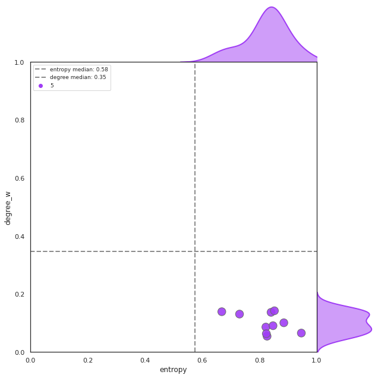
measure = 'degree_w'
_df = cent_df.loc[cent_df.measure.isin([measure, 'entropy'])]
_df = _df.groupby(['node', 'measure']).mean().unstack()
_df = _df.centrality
_df = pd.concat([_df, pd.DataFrame({'oc_idx': partition})], axis=1)
sns.set_theme(style='white', palette='deep')
save_dir = svinet.get_save_path('region_plots')
for acro, mask in mice.parcel.results['major_masks'].items():
if acro not in ['PERI', 'ECT']:
continue
selected_nodes = list(itertools.compress(
data=mice.parcel.results['eroded_masks'],
selectors=[
overlap_score(mask, m) > 0.3
if acro in ['PERI', 'ECT'] else 0.8
for m in mice.parcel.results['eroded_masks'].values()
]
))
selected_nodes = [
f"{0 if x <= mice.parcel.results['n_cortical_regions'] // 2 else 1}-315-{x}"
for x in selected_nodes
]
selected_nodes = [net.l2n[x] for x in selected_nodes]
if not len(selected_nodes):
continue
jg = sns.JointGrid(
data=_df.iloc[selected_nodes],
x='entropy',
y=measure,
hue='oc_idx',
size=9,
palette=svinet.colors,
xlim=(0, 1),
ylim=(0, 1),
space=0.0,
)
jg.plot_joint(
sns.scatterplot,
hue='oc_idx',
s=180,
alpha=0.9,
edgecolor='dimgrey',
)
jg.plot_marginals(
sns.kdeplot,
fill=True,
alpha=0.5,
lw=2,
)
_median = np.median(svinet.h)
jg.ax_joint.axvline(
x=_median,
ls='--',
lw=2,
alpha=1.0,
c=sns.color_palette('deep')[7],
label=f"entropy median: {_median:.2f}",
zorder=0,
)
_median = cent_df.loc[cent_df.measure == 'degree_w', 'centrality'].median()
jg.ax_joint.axhline(
y=_median,
ls='--',
lw=2,
alpha=1.0,
c=sns.color_palette('deep')[7],
label=f"degree median: {_median:.2f}",
zorder=0,
)
jg.ax_joint.legend(loc='upper left', prop={'size': 9})
file = pjoin(save_dir, f"{measure}-{acro}.pdf")
jg.savefig(file)
plt.show()
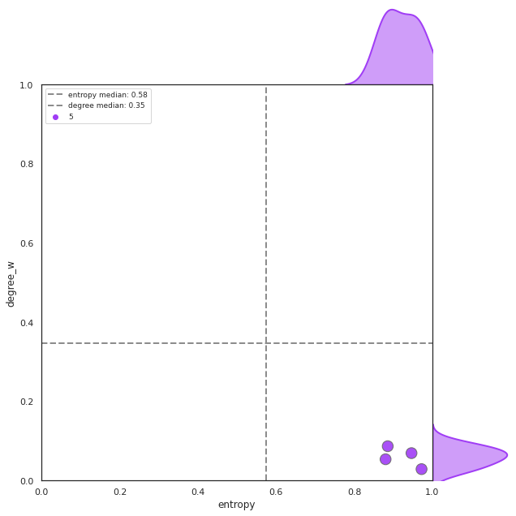
import networkx.algorithms.community as nx_comm
nx.group_degree_centrality()
a = 'degree'
b = 'eigenvector'
_df = cent_df.loc[cent_df.measure.isin([a, b])]
_df = _df.groupby(['node', 'measure']).mean().unstack()
_df = _df.centrality
x = _df.loc[:, a].values.reshape(-1, 1)
y = _df.loc[:, b].values.reshape(-1, 1)
lm = LinearRegression().fit(x, y)
fig, ax = create_figure(1, 1)
sns.regplot(
data=_df,
x=a,
y=b,
ax=ax,
)
ax.set_aspect(1 / ax.get_data_ratio())
ax.set_title(f"r = {lm.coef_.item():.2f}")
ax.set_xlabel(a)
ax.set_ylabel(b)
plt.show()
Compare centroids and memship_vol (old stuff)¶
fig, axes = create_figure(3, 1, (13.5, 6), 'white')
data = {
'centroids': svinet.centroids,
'pi': svinet.pi,
'pi_median':np.median(svinet.pi_all, axis=0),
}
for ax, (lbl, x) in zip(axes, data.items()):
im = ax.imshow(x, cmap='Spectral_r', aspect=3.4, vmin=0, vmax=1)
ax.set_title(lbl)
remove_ticks(axes)
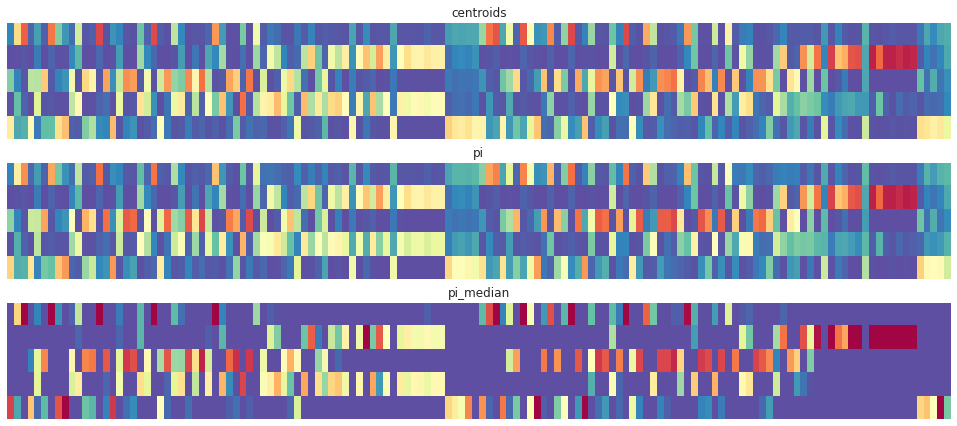